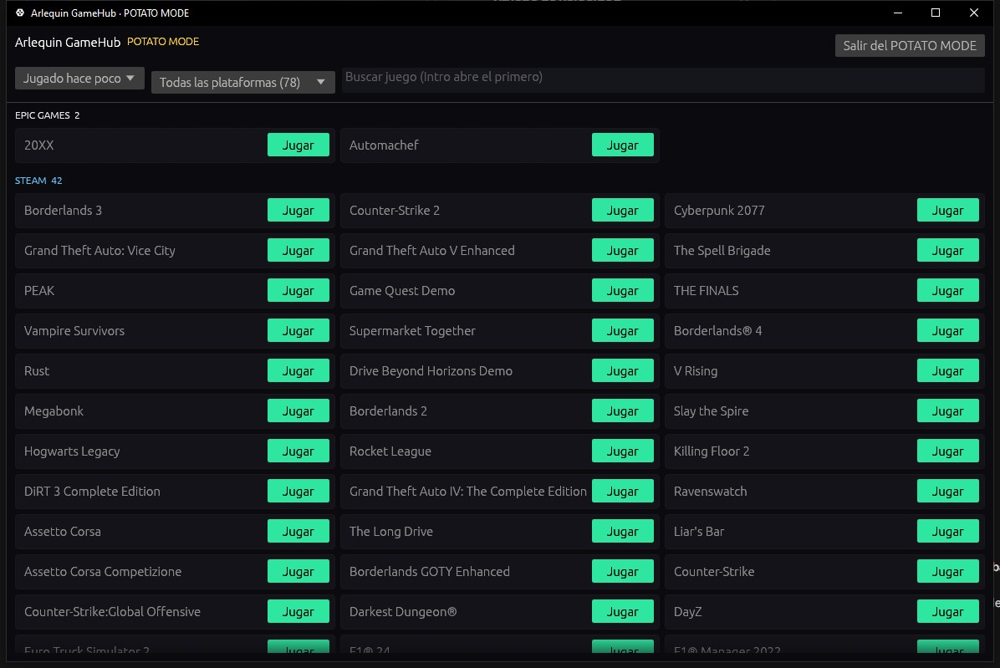

POTATO MODE
Per a PC amb pocs recursos: GameHub en una finestra nativa ultralleugera.
POTATO MODE reinicia GameHub sense la seva interfície web (sense navegador a dins): només els teus jocs i un botó per jugar. Fa servir molta menys memòria i continua fent còpia de les teves partides i comptant les teves hores.
POTATO MODE+ (ArlequinPro) va encara més enllà: només el llançador, sense res en segon pla, perquè tot el teu PC sigui per al joc.
La finestra de POTATO MODE la dibuixa la CPU, sense fer servir la targeta gràfica: en total, GameHub fa servir uns 66 MB de memòria (440 MB en mode normal) i cap memòria de vídeo. I la interfície normal també fa servir molta menys memòria i GPU que abans, sobretot amb molts jocs o amb GameHub minimitzat.
Com es fa servir
- El botó «POTATO MODE» a la barra lateral (i «+» per a POTATO MODE+).
- A Opcions → Rendiment pots fer que comenci sempre així i triar quin.
- Quan obres un joc, GameHub passa a POTATO MODE sol (tanca la seva finestra i el xat per deixar-ho tot al joc) i torna com estava quan el tanques. A Opcions → En jugar tries si tanca la finestra i si desconnecta el xat (per exemple, per continuar en una trucada de Discord).
- GameHub torna tan bon punt tanques el joc, i el pas a POTATO MODE quan s'obre un joc es pot desactivar a Opcions → Rendiment.

Normal, POTATO MODE i POTATO MODE+, mesurats
Mesurat al PC del creador de GameHub (Ryzen 7 9800X3D, Radeon RX 9070 XT, 64 GB de RAM) amb 62 jocs instal·lats: GameHub normal a la Biblioteca mostrant només els jocs instal·lats, davant de POTATO MODE i POTATO MODE+, amb la finestra visible i sense tocar res (mitjana de 90 segons).
| Normal (Biblioteca) | POTATO MODE | POTATO MODE+ | |
|---|---|---|---|
| RAM | 440 MB | 66 MB (−85 %) | 57 MB (−87 %) |
| Memòria de vídeo | 209 MB | 0 MB | 0 MB |
| Processador | 0.4 % | 0.01 % | 0 % |
| Targeta gràfica | 0.7 % | 0 % | 0 % |
| Processos oberts | 7 | 2 | 2 |
Només es compten GameHub i el seu navegador integrat. Els números poden variar al teu PC, però la diferència és similar.
Vols provar-lo?
⬇ Baixada directa 🛍️ Baixa'l de Microsoft StoreWindows 10 i 11 (64 bits) · Gratuït · S'actualitza sol